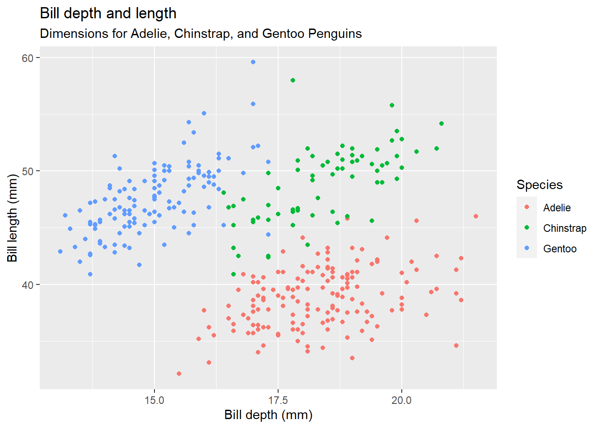
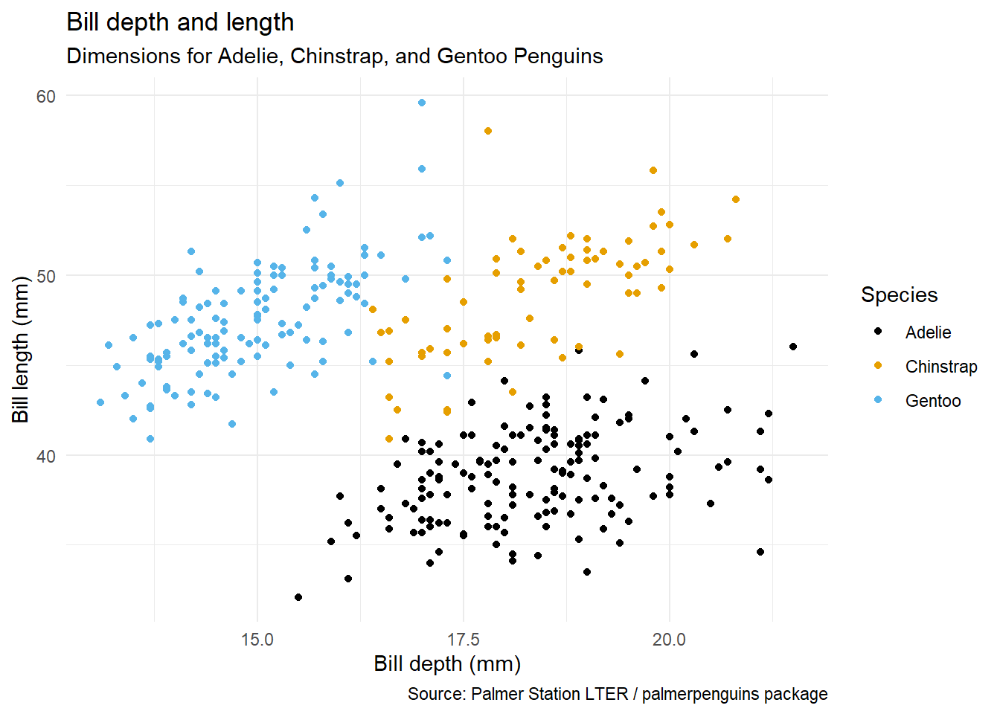

ggplot(data = [dataset],
mapping = aes(x = [x-variable], y = [y-variable])) +
geom_xxx() +
other optionsWelcome to STA 313
Lecture 0
Course Details
Teaching team
Instructor
Dr. Mine Çetinkaya-Rundel
Old Chem 213
Teaching assistants
- Jackie Du - Head TA
- Lorenzo Mauri - Lab 1 TA
- Sam Rosen - Lab 2 TA
- Evan Dragich - Lecture TA
- Holly Cui - TA
Timetable
- Lectures (weekly)
- Tuesdays, 12:00 - 1:15 pm - Old Chem 116
- Thursdays, 12:00 - 1:15 pm - Old Chem 116
- Labs (weekly)
- Lab 1: Wednesdays, 1:45 - 3:00 pm - Link Classroom 3
- Lab 2: Wednesdays, 3:30 - 4:45 pm - Link Classroom 3
Themes: what, why, and how
- What: the plot
- Specific types of visualizations for a particular purpose (e.g., maps for spatial data, Sankey diagrams for proportions, etc.)
- Tooling to produce them (e.g., specific R packages)
- How: the process
- Start with a design (sketch + pseudo code)
- Pre-process data (e.g., wrangle, reshape, join, etc.)
- Map data to aesthetics
- Make visual encoding decisions t(e.g., address accessibility concerns)
- Post-process for visual appeal and annotation
- Why: the theory
- Tie together “how” and “what” through the grammar of graphics
But first…
Show and tell
Form a small group (2-4 people) with people sitting around you
First, introduce yourselves to each other – name (and proper pronunciation of name), year, major, where are you from, etc.
Start with the bad graphs – Share your examples of “bad” graphs and why you think they’re bad.
Then, share your good graphs – Same deal, share your examples of “good” graphs and why you think they’re good.
Finally, choose the one plot from your group that you think is most striking, either because it’s bad or because it’s good, and have one team member share the graph on #general in Slack.
Course components
Course website
aka “the one link to rule them all”
Lectures
In person
Attendance is required (as long as you’re healthy!)
A little bit of everything:
- Traditional lecture
- Live coding + demos
- Short exercises + solution discussion
Recordings will be posted after class – to be used for review + make-up if you can’t make it to class due to health reasons, they’re not an alternative to class attendance
Labs
Attendance is required (as long as you’re healthy!)
Opportunity to work on course assignments with TA support
Opportunity to work with teammates on projects
Announcements
Posted on Sakai (Announcements tool) and sent via email, be sure to check both regularly
I’ll assume that you’ve read an announcement by the next “business” day
Diversity and inclusion
It is my intent that students from all diverse backgrounds and perspectives be well-served by this course, that students’ learning needs be addressed both in and out of class, and that the diversity that the students bring to this class be viewed as a resource, strength and benefit.
If you have a name that differs from those that appear in your official Duke records, please let me know!
Please let me know your preferred pronouns.
If you feel like your performance in the class is being impacted by your experiences outside of class, please don’t hesitate to come and talk with me. I want to be a resource for you. If you prefer to speak with someone outside of the course, your advisers and deans are excellent resources.
I (like many people) am still in the process of learning about diverse perspectives and identities. If something was said in class (by anyone) that made you feel uncomfortable, please talk to me about it.
Accessibility
The Student Disability Access Office (SDAO) is available to ensure that students are able to engage with their courses and related assignments.
I am committed to making all course materials accessible and I’m always learning how to do this better. If any course component is not accessible to you in any way, please don’t hesitate to let me know.
Assessments
Attendance + participation (5%)
Required throughout the semester in lecture and lab
Students who attend at least 80% of the lectures and participate regularly in lecture and/or other course venues (lab + Slack) will receive full credit for this portion of their grade
Participation in labs as well as on Slack will also count towards this component
Reading quizzes (10%)
- Online, individual
- Cover reading that is due since the previous quiz and up to and including the deadline for the given quiz
- Due by 12 pm ET (beginning of class) on the indicated day on the course schedule
- Lowest dropped
Homework assignments (45%)
- Submitted on GitHub, individual
- Some lab sessions allocated to working on homework / getting feedback from TAs
- Due by 12 pm ET (beginning of class) on the indicated day on the course schedule
- Lowest dropped
Projects
- Submitted on GitHub, team-based
- Interim deadlines, peer review on content, peer evaluation for team contribution
- Some lab sessions allocated to working on projects, doing peer review, getting feedback from TAs
Teams
- Team assignments
- In class exercises and projects
- Assigned different teams for each project
- Peer evaluation during teamwork and after completion
- Expectations and roles
- Everyone is expected to contribute equal effort
- Everyone is expected to understand all code turned in
- Individual contribution evaluated by peer evaluation, commits, etc.
Project 1 (15%)
Same/similar data, different results
Presentation and write-up
Wrapped up before midterms grades are due
Project 2 (25%)
The world is your oyster! (and more details TBA)
New team
Presentation and write-up
Wrapped up on the final exam date
Grading
This course is assessed 100% on your coursework (there is no exam). We will be assessing you based on the following assignments,
| Assignment | Type | Value | n | Due |
|---|---|---|---|---|
| Attendance + participation | Individual | 5% | ||
| Reading quizzes | Individual | 10% | 7 | ~ Every other week |
| Homeworks | Individual | 45% | 6 | ~ Every other week |
| Project 1 | Team | 15% | 1 | ~ Week 6 + earlier interim deadlines |
| Project 2 | Team | 25% | 1 | ~ Finals week + earlier interim deadlines |
Community participation
This is not required but highly recommended!
- TidyTuesday - New dataset every week for wrangling, visualizing, modeling
- I encourage you to participate, or at a minimum, browse others’ contributions on Twitter or Mastodon with #TidyTuesday
Course policies
COVID policies
Wear a mask if the university requires
Stay home if you’re sick and follow guidance
Read and follow university guidance
Late work policy
Reading quizzes: Late submissions not accepted
Homework assignments:
- Late, but same day (before midnight): -10% of available points
- Late, but next day: -20% of available points
- Two days late or later: No credit, and we will not provide written feedback
Project presentations: Late submissions not accepted
Project write-ups:
- Late, but same day (before midnight): -10% of available points
- Late, but next day: -20% of available points
- Two days late or later: No credit, and we will not provide written feedback
Peer evaluation:
- Late submissions not accepted
- Must turn in peer evaluation if you want your own score from others
Collaboration policy
Only work that is clearly assigned as team work should be completed collaboratively (Projects)
Reading quizzes must be completed individually, you may not discuss answers with teammates, clarification questions should only be asked to myself and the TAs
Homework assignments must be completed individually. You may not directly share answers / code with others, however you are welcome to discuss the problems in general and ask for advice
Academic integrity
To uphold the Duke Community Standard:
- I will not lie, cheat, or steal in my academic endeavors;
- I will conduct myself honorably in all my endeavors; and
- I will act if the Standard is compromised.
most importantly:
ask if you’re not sure if something violates a policy!
Support
Office hours
Mine:
Wednesdays 8 - 9 pm - Zoom (E)
Except Wed, Feb 1
Any other exceptions will be announced in class / by email
By appointment - Zoom or Old Chem 213
TAs:
Jackie: Tuesdays 4 - 6 pm - Edge Project Room 2
Lorenzo: Mondays 5 - 7 pm - Old Chemistry 203b
Sam: Tuesdays 1:30 - 3:30 pm - Location TBA
Evan: Mondays 10 am - 12 pm - Zoom (Link on Sakai > Zoom meetings)
Holly: Mondays 1-3 pm - Zoom (Link on Sakai > Zoom meetings)
+ lots more resources listed on the syllabus!
Wellness
I want to make sure that you learn everything you were hoping to learn from this class. If this requires flexibility, please don’t hesitate to ask.
You never owe me personal information about your health (mental or physical) but you’re always welcome to talk to me. If I can’t help, I likely know someone who can.
I want you to learn lots of things from this class, but I primarily want you to stay healthy, balanced, and grounded.
Course Tools
RStudio
Browser based RStudio instance(s) provided by Duke OIT
Requires internet connection to access
Provides consistency in hardware and software environments
Local R installations are fine but we will not guarantee support
GitHub
GitHub organization for the course
All of your work and your membership (enrollment) in the organization is private
Each assignment is a private repo on GitHub, I distribute the assignments on GitHub and you submit them there
Feedback on assignments is given as GitHub issues, scores recorded on Sakai Gradebook
Fill out the Getting to know you survey for collection of your account names, later this week you will be invited to the course organization.
Username advice
in case you don’t yet have a GitHub account…
Some brief advice about selecting your account names (particularly for GitHub),
Incorporate your actual name! People like to know who they’re dealing with and makes your username easier for people to guess or remember
Reuse your username from other contexts, e.g., Twitter or Slack
Pick a username you will be comfortable revealing to your future boss
Shorter is better than longer, but be as unique as possible
Make it timeless. Avoid highlighting your current university, employer, or place of residence
Slack
Online forum for asking and answering questions
Private repo in the course organization
You will need to join the course organization for access
Ask and answer questions related to course logistics, assignment, etc. here
Personal questions (e.g., extensions, illnesses, etc.) should be via email to me
Once you join, browse the channels to make sure you’re posting questions in the right channel, update your profile with your name, photo/avatar of you that matches your GitHub profile, and your pronouns
Unfortunately Slack is not the best place to ask coding questions, but it’s a great place for real-time connection and collaboration
Demo on Tuesday for asking good questions with proper code formatting.
Before the weekend
Create a GitHub account if you don’t have one
Read the syllabus
Make sure you can login in to RStudio and reserve a container for STA 313: cmgr.oit.duke.edu/containers
Complete the Getting to know you survey on Sakai – to be posted
Complete the readings and Reading Quiz 1 – to be posted
Grammar of graphics
Data visualization
“The simple graph has brought more information to the data analyst’s mind than any other device.” --- John Tukey
Data visualization is the creation and study of the visual representation of data
Many tools for visualizing data -- R is one of them
Many approaches/systems within R for making data visualizations -- ggplot2 is one of them, and that’s what we’re going to use
ggplot2 ∈ tidyverse

ggplot2 is tidyverse’s data visualization package
ggin “ggplot2” stands for Grammar of GraphicsInspired by the book Grammar of Graphics by Leland Wilkinson
Grammar of Graphics
A grammar of graphics is a tool that enables us to concisely describe the components of a graphic

Source: BloggoType
Hello ggplot2!
ggplot()is the main function in ggplot2- Plots are constructed in layers
- Structure of the code for plots can be summarized as
- The ggplot2 package comes with the tidyverse
library(tidyverse)- For help with ggplot2, see ggplot2.tidyverse.org
Data: Palmer Penguins
Measurements for penguin species, island in Palmer Archipelago, size (flipper length, body mass, bill dimensions), and sex.

library(palmerpenguins)
glimpse(penguins)Rows: 344
Columns: 8
$ species <fct> Adelie, Adelie, Adelie, Adelie, Adelie, Adelie, Adel…
$ island <fct> Torgersen, Torgersen, Torgersen, Torgersen, Torgerse…
$ bill_length_mm <dbl> 39.1, 39.5, 40.3, NA, 36.7, 39.3, 38.9, 39.2, 34.1, …
$ bill_depth_mm <dbl> 18.7, 17.4, 18.0, NA, 19.3, 20.6, 17.8, 19.6, 18.1, …
$ flipper_length_mm <int> 181, 186, 195, NA, 193, 190, 181, 195, 193, 190, 186…
$ body_mass_g <int> 3750, 3800, 3250, NA, 3450, 3650, 3625, 4675, 3475, …
$ sex <fct> male, female, female, NA, female, male, female, male…
$ year <int> 2007, 2007, 2007, 2007, 2007, 2007, 2007, 2007, 2007…Goal
Warning: Removed 2 rows containing missing values (`geom_point()`).
ggplot(
penguins,
aes(x = bill_depth_mm, y = bill_length_mm, colour = species)
) +
geom_point() +
labs(
title = "Bill depth and length",
subtitle = "Dimensions for Adelie, Chinstrap, and Gentoo Penguins",
x = "Bill depth (mm)", y = "Bill length (mm)",
colour = "Species"
)An improved goal
Warning: Removed 2 rows containing missing values (`geom_point()`).
ggplot(
penguins,
aes(x = bill_depth_mm,y = bill_length_mm,colour = species)) +
geom_point() +
labs(
title = "Bill depth and length",
subtitle = "Dimensions for Adelie, Chinstrap, and Gentoo Penguins",
x = "Bill depth (mm)", y = "Bill length (mm)",
colour = "Species",
caption = "Source: Palmer Station LTER / palmerpenguins package"
) +
theme_minimal() +
ggthemes::scale_color_colorblind()Start with the penguins data frame, map bill depth to the x-axis and map bill length to the y-axis.
Represent each observation with a point and map species to the colour of each point.
Title the plot “Bill depth and length”, add the subtitle “Dimensions for Adelie, Chinstrap, and Gentoo Penguins”, label the x and y axes as “Bill depth (mm)” and “Bill length (mm)”, respectively, label the legend “Species”, and add a caption for the data source.
Finally, use a discrete colour scale that is designed to be perceived by viewers with common forms of colour blindness.